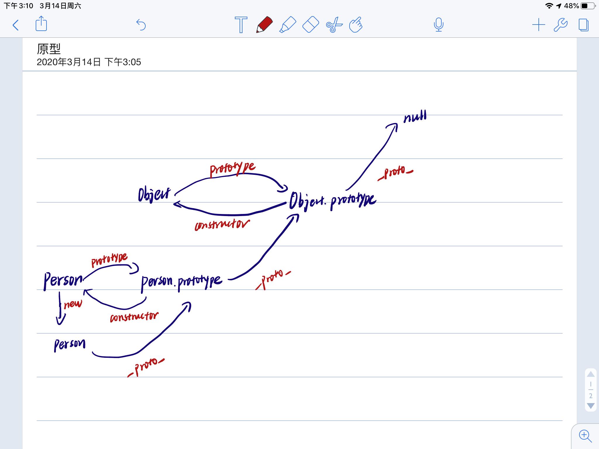

先来放张图片

注：实例对象和构造函数均可以指向原型，那原型是否有属性指向构造函数或实例呢？
当读取实例的属性时，如果找不到，就会查找原型中的属性，一直向上查找
function parent3(age){
return{
age
}
}
var p3 = parent3(50);
console.log(p3.constructor);//[Function: Object]注：其实在实例中，并没有constructor属性，于是查找其原型，发现有constructor属性，且指向构造函数
继承其实意味着赋值操作，但是JS并不会赋值对象的属性，只是在两个对象之间创建一个关联，所以另一个对象可以通过委托访问另一个对象的属性和函数
function Foo(){
return 'foo';
}
Foo.prototype.method = function(){
return 'method';
}
function Bar(){
return 'bar';
}
const foo = new Foo();
Bar.prototype = foo; //继承
const bar = new Bar();
console.log(bar instanceof Foo);//true
//因为Object.getPrototypeOf(bar) === Foo.prototypefunction instanceof_of(L,R){
var O = R.prototype;
L = Object.getPrototypeOf(L);
while(true){
if(L === null){
return false //找到原型链的最底层，也未找到，所以不在其原型链上
}
if(O === L){
return true //一旦找到，便返回true
}
L = Object.getPrototypeOf(L);//顺着原型链向下找
}
}
function C(){}
function D(){}
var o = new C();
console.log(instanceof_of(o, C)); // true
console.log(instanceof_of(o, D)); // falsefunction Animal(){
this.value = 'animal';
}
Animal.prototype.run = function(){
return this.value +' c'+ 'is running';
}
function Cat(){}
//这里是关键，创建Animal的实例，并将该实例，并将该实例赋值给Cat.prototype
//相当于Cat.prototype._protp_ = Animal.prototype
Cat.prototype = new Animal();
const cat = new Cat();
console.log(cat.value);//animal图解：绿色这条链便是原型链继承

new创建的实例有两大特性
模拟实现：当new Foo()执行时，会发生以下事情：
一个继承自Foo.prototype的新对象被创建
使用指定参数调用构造函数
由构造函数返回的对象就是new表达式的结果。如果
构造函数没有显式返回一个对象，则使用步骤一创建的对象
function create(){
//新建空对象
var obj = new Object();
//获得构造函数,arguments中去除第一个参数
Con = [].shift.call(arguments);//也就是说，对arguments执行shift方法
//Con拿到了第一个参数即构造函数，并且arguments删除了第一个参数
//原型链进行链接
Object.setPrototypeOf(obj,Con.prototype);
//绑定this实现继承，obj可以访问到构造函数中的属性
Con.apply(obj,arguments);
//返回对象
return obj;
}
function Car(color){
this.color = color;
}
Car.prototype.start = function(){
console.log(this.color + " car start");
}
var car = create(Car,"black");
console.log(car.color);//black
car.start();//black car startEnd
by wind-jyf